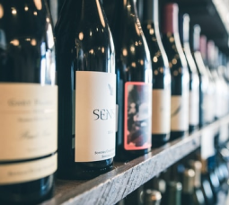
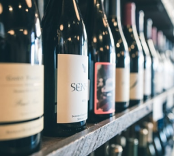

Новинки коллекций
Март 1980
Урожай Марселя
Вкус вина насыщенный, мясистый, мягкий, обильный,
сочный и очень питкий. Живые нотки вишни и пикантной
малины гармонично сочетаются с оттенками лакрицы,
специй и влажной земли, уравновешенными яркой
кислотностью.
| 1980 |
Colli Euganei Bianco Ca' Lustra 1980 Прекрасно подойдет для любого повода |
| 1980 |
Marcel Lapierre Raisins Gaulois 1980 Скрасит ваш пикник на природе |
| 1980 |
Cotes du Rhone Rouge Guidal 1980 Неотъемлемый атрибут каждого застолья |
Яркий аромат вина взрывается оттенками спелых ягод,
красных яблок и тонкими нотками тропических фруктов.
Вино хорошо сочетается с мясными закусками, сырами,
буррито и другими простыми блюдами.
 
